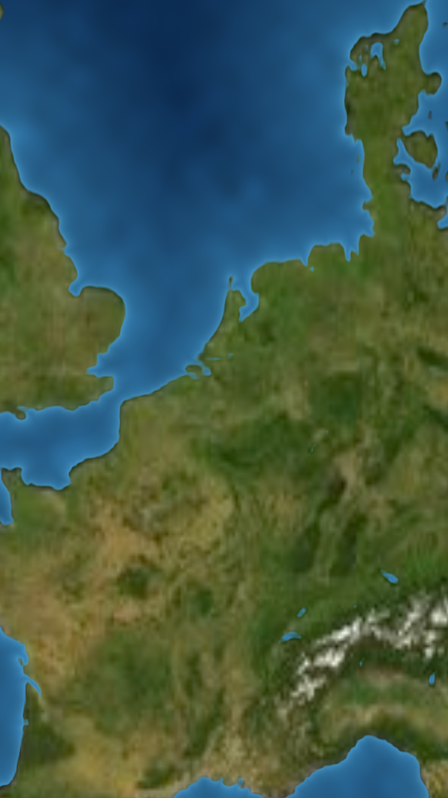

<!doctype html>
<html lang="ru">
<head>
<meta charset="utf-8">
<title>Baarle — door and window</title>
<style>
@font-face{font-family:'Cormorant Garamond';font-weight:700;src:url(fonts/cormorant-garamond-cyrillic-700-normal.woff2) format('woff2');unicode-range:U+0400-045F,U+0490-0491,U+04B0-04B1,U+2116}
@font-face{font-family:'Cormorant Garamond';font-weight:700;src:url(fonts/cormorant-garamond-latin-700-normal.woff2) format('woff2');unicode-range:U+0000-00FF,U+2000-206F}
*{box-sizing:border-box;margin:0;padding:0}
html,body{width:1080px;height:1920px;overflow:hidden;background:#f1f2f6}
body{font-family:'Inter Display','Inter',sans-serif;-webkit-font-smoothing:antialiased;color:#111218}
.abs{position:absolute}
.mono{font-family:'DejaVu Sans Mono',monospace}
.ctr{position:absolute;transform:translate(-50%,-50%);white-space:nowrap;text-align:center}
.pill{position:absolute;border-radius:999px;display:flex;align-items:center;justify-content:center;white-space:nowrap;background:rgba(255,255,255,.95);border:1.5px solid #fff;box-shadow:0 14px 30px -14px rgba(10,20,40,.45);transform:translate(-50%,-50%)}
.card{position:absolute;border-radius:40px;background:#fff;box-shadow:0 40px 80px -36px rgba(10,20,40,.6),0 10px 24px -12px rgba(10,20,40,.25)}
.chip{display:inline-flex;align-items:center;gap:12px;white-space:nowrap;padding:10px 24px;border-radius:999px;background:#fff;font-weight:800;letter-spacing:.04em;box-shadow:0 14px 28px -12px rgba(10,20,40,.5)}
.blue{color:#2f7bf5}
.sub{position:absolute;left:540px;transform:translate(-50%,-50%);padding:16px 34px;border-radius:999px;background:rgba(255,255,255,.96);font-weight:700;font-size:37px;letter-spacing:-.01em;white-space:nowrap;box-shadow:0 16px 34px -16px rgba(10,20,40,.55)}
.subw{position:absolute;left:540px;transform:translate(-50%,-50%);white-space:nowrap;font-weight:700;font-size:58px;letter-spacing:-.01em;color:#fff;text-shadow:0 3px 0 rgba(0,0,0,.25),0 4px 18px rgba(0,0,0,.55)}
.plate{position:absolute;left:0;top:0;width:1080px;height:1920px}
svg{display:block}
</style>
</head>
<body>
<div id="root" class="abs" style="inset:0"></div>
<script src="lib/d3-array.min.js"></script>
<script src="lib/d3-geo.min.js"></script>
<script src="lib/topojson-client.min.js"></script>
<script src="lib/world50m.js"></script>
<script src="lib/world10m.js"></script>
<script src="plates/plates.js"></script>
<script src="icons.js"></script>
<script src="characters2.js"></script>
<script src="baarle_art.js"></script>
<script>
const V=(location.hash||'#B1').slice(1);
const ROOT=document.getElementById('root');
const BLUE='#2f7bf5',ORANGE='#f08a24',INK='#2a2118';
const countries=topojson.feature(WORLD,WORLD.objects.countries).features.filter(c=>c.id!=='010');
const byId=id=>countries.find(c=>c.id===id);
const MIDEAST=new Set(['682','887','512','784','634','414','368','400','376','760','422','364','792','275','048','196']);
const html=s=>{const d=document.createElement('div');d.innerHTML=s.trim();const e=d.firstChild;ROOT.appendChild(e);return e};
const proj=name=>{const P=PLATES[name];return d3.geoMercator().scale(P.k).translate([P.tx,P.ty])};
function counter(n){const sl=[0,1,2,3,4,5].map(k=>`<span style="font-style:italic;color:${k<n?BLUE:'#c6cbdb'}">/</span>`).join('');
  html(`<div class="pill" style="left:540px;top:150px;height:70px;padding:0 30px;gap:20px;font-weight:800;font-size:31px;letter-spacing:.04em"><span>CHAPTER ${n} OF 6</span><span class="mono" style="font-size:37px;letter-spacing:-.04em;font-weight:700">${sl}</span></div>`)}
const at=(x,y,inner,extra='')=>html(`<div class="abs" style="left:${x}px;top:${y}px;${extra}">${inner}</div>`);
// smooth curve through projected points (Catmull-Rom → cubic Bézier)
function smooth(pts){let d=`M${pts[0][0]},${pts[0][1]}`;for(let i=0;i<pts.length-1;i++){const p0=pts[i-1]||pts[i],p1=pts[i],p2=pts[i+1],p3=pts[i+2]||p2;
  d+=` C${p1[0]+(p2[0]-p0[0])/6},${p1[1]+(p2[1]-p0[1])/6} ${p2[0]-(p3[0]-p1[0])/6},${p2[1]-(p3[1]-p1[1])/6} ${p2[0]},${p2[1]}`}return d}


// ───────────── full-bleed map; all UI sits on top: progress pill (n/6 + slashes + era), phrase capsule, chips + subtitle raised
function topUI(n,era,phrase,opt={}){
  // year pill: the year only; on a change the old year rolls up and the new one rolls in
  const yr=opt.from?`<span style="position:relative;display:inline-block;height:44px;overflow:hidden;vertical-align:middle"><span style="display:block;transform:translateY(${-44*opt.roll}px)"><span style="display:block;height:44px;line-height:44px;filter:blur(${opt.roll*6}px);opacity:${1-opt.roll}">${opt.from}</span><span style="display:block;height:44px;line-height:44px;filter:blur(${(1-opt.roll)*6}px);opacity:${opt.roll}">${era}</span></span></span>`:era;
  html(`<div class="pill" style="left:540px;top:140px;height:70px;padding:0 34px;font-weight:900;font-size:38px;letter-spacing:.02em;color:${BLUE}">${yr}</div>`);
  // phrase capsule: words come out of the blur one by one (opt.words = how many are in, fractional)
  const ws=phrase.split(' ');const k=opt.words??ws.length;
  const inner=ws.map((w,i)=>{if(w==='|')return '<br>';const p=Math.max(0,Math.min(1,k-i));return `<span style="display:inline-block;margin:0 .12em;opacity:${p};filter:blur(${(1-p)*10}px);transform:translateY(${(1-p)*14}px)">${w.replace(/_/g,' ')}</span>`}).join(' ');
  if(opt.noPhrase)return;
  html(`<div class="abs" style="left:540px;top:215px;transform:translateX(-50%);padding:22px 44px 26px;border-radius:40px;background:rgba(255,255,255,.96);box-shadow:0 22px 46px -22px rgba(10,20,40,.55);font-weight:900;font-size:66px;letter-spacing:-.04em;line-height:1.02;text-align:center;white-space:nowrap">${inner}</div>`);
}
const SUBY=1560,CHIPY=1440;
function subp(t,o={}){const y=SUBY+(o.dy||0);const ws=t.split(' '),k=o.words??ws.length,cur=Math.floor(k);
  // karaoke: spoken words dark, the word being said blue, the rest waits at 30 %
  return html(`<div class="sub" style="top:${y}px">${ws.map((w,i)=>`<span style="display:inline-block;margin:0 .08em;${i<cur||!o.hl?'':i===cur?`color:${BLUE}`:'opacity:.3'}">${w}</span>`).join(' ')}</div>`)}
function chipRow(items){return html(`<div class="abs" style="left:540px;top:${CHIPY}px;transform:translate(-50%,-50%);display:flex;gap:16px">${items.map(([t,st])=>`<span class="chip" style="font-size:29px;${st||''}">${t}</span>`).join('')}</div>`)}
const ROUTE=[[-9.1,38.7],[-16,29],[-22,14],[-27,0],[-24,-18],[-8,-33],[10,-37.5],[20,-36.6],[31,-30],[39,-19],[41,-6],[52,4],[66,10],[75.8,11.25]];
const ANGER=s=>`<svg width="${110*s}" height="${110*s}" viewBox="-45 -45 90 90">${[0,90,180,270].map(r=>`<path transform="rotate(${r})" d="M8 -30 Q8 -10 28 -8" stroke="#d62828" stroke-width="8" fill="none" stroke-linecap="round"/>`).join('')}</svg>`;


// ───────────── Baarle: house-style frames. Facade scenes: flat light bg; map scene: satellite plate full-bleed.
const C10=topojson.feature(WORLD10,WORLD10.objects.countries).features,by10=id=>C10.find(c=>c.id===id);
const FX=-45,FY=520,FS=1.3,P=(x,y)=>[FX+x*FS,FY+y*FS];   // facade placement (900×980 box)
const fac=(m,o={})=>{html(`<div class="abs" style="inset:0;background:#dde6f0"></div>`);return at(FX,FY,facade(m,Object.assign({s:FS,marks:false},o)))};
const chipAt=(x,y,t,st='')=>html(`<div class="chip" style="position:absolute;left:${x}px;top:${y}px;transform:translate(-50%,-50%);font-size:28px;${st}">${t}</div>`);
const schem=()=>chipAt(P(760,190)[0],P(760,190)[1],'SCHEMATIC','font-size:20px;color:#8a90a6;letter-spacing:.1em');
const sideChips=()=>{chipAt(250,1650,`${FLAG.BE(.5)} BELGIUM`,'padding:8px 20px 8px 10px;font-size:25px');chipAt(830,1650,`${FLAG.NL(.5)} NETHERLANDS`,'padding:8px 20px 8px 10px;font-size:25px')};
const S1Y=1770; const sub=(t,k)=>{const e=subp(t,{words:k,hl:1});e.style.top=S1Y+'px';return e};

if(V==='B1'){ fac(0,{arrows:.9});schem();sideChips();
  topUI(0,'TODAY','<span_class="blue">Door</span> ↔ <span_class="blue">window?</span>');
  chipAt(540,P(0,150)[1],'WHY?',`background:${BLUE};color:#fff;font-size:30px`);
  sub('swap a front door with a window?',4.4);
}
if(V==='B2'){
  at(0,0,'');
  const pr=proj('benelux'),path=d3.geoPath(pr);
  html(`<svg class="abs" style="left:0;top:0" width="1080" height="1920"><path d="${path(by10('056'))}" fill="${BE}" fill-opacity=".42" stroke="#fff" stroke-width="3"/><path d="${path(by10('528'))}" fill="${NL}" fill-opacity=".42" stroke="#fff" stroke-width="3"/></svg>`);
  const b=pr([4.93,51.44]);at(b[0]-80,b[1]-80,ICON.pulse(BLUE,.4));
  chipAt(b[0]+120,b[1]-50,'BAARLE',`background:${BLUE};color:#fff;font-size:32px`);
  const be=pr([4.6,50.6]),nl=pr([5.6,52.3]);chipAt(be[0],be[1],`${FLAG.BE(.5)} BELGIUM`,'padding:8px 20px 8px 10px');chipAt(nl[0],nl[1],`${FLAG.NL(.5)} NETHERLANDS`,'padding:8px 20px 8px 10px');
  topUI(0,'TODAY','Welcome to | <span_class="blue">Baarle</span>');
  sub('fit together like pieces of a puzzle',5);
}
if(V==='B3'){ fac(0,{hl:'B'});schem();sideChips();
  html(`<svg class="abs" style="left:0;top:0" width="1080" height="1920"> <path d="M${P(620,330)[0]} ${P(620,330)[1]} C${P(700,280)[0]} ${P(700,280)[1]} ${P(760,280)[0]} ${P(760,280)[1]} ${P(800,290)[0]} ${P(800,290)[1]}" stroke="${BLUE}" stroke-width="5" fill="none" stroke-linecap="round"/></svg>`);
  chipAt(P(760,290)[0]-20,P(760,290)[1],'THE FRONT DOOR',`background:${BLUE};color:#fff`);
  // corner map card: where we are
  const pr=proj('benelux'),b=pr([4.93,51.44]),z=.55;
  html(`<div class="card" style="left:74px;top:450px;width:230px;height:230px;overflow:hidden;background:url(plates/benelux_sat.png) ${-(b[0]*z-115)}px ${-(b[1]*z-115)}px / ${1080*z}px auto"><div style="position:absolute;left:105px;top:105px;width:20px;height:20px;border-radius:50%;background:#fff;box-shadow:0 0 0 6px ${BLUE}"></div></div>`);
  topUI(0,'TODAY','The front door | <span_class="blue">matters</span>');
  sub('can become surprisingly important',3.4);
}
if(V==='B4'){ fac(0,{hl:'B'});schem();
  chipAt(P(620,262)[0],P(620,262)[1]-8,'ENTRANCE · NL SIDE',`color:${NL};font-size:25px`);
  // timeline
  const TY=1620,x0=120,x1=960,yr=y=>x0+(y-1975)/(2025-1975)*(x1-x0);
  html(`<svg class="abs" style="left:0;top:0" width="1080" height="1920"><path d="M${x0} ${TY} H${x1}" stroke="#c6cbdb" stroke-width="6" stroke-linecap="round"/>
   ${[1980,1990,2000,2010,2020].map(y=>`<path d="M${yr(y)} ${TY-14} V${TY+14}" stroke="#c6cbdb" stroke-width="4"/><text x="${yr(y)}" y="${TY+52}" text-anchor="middle" font-family="Inter Display" font-weight="700" font-size="26" fill="#8a90a6">${y}</text>`).join('')}
   <path d="M${x0} ${TY} H${yr(1995)}" stroke="${BLUE}" stroke-width="6" stroke-linecap="round"/><circle cx="${yr(1995)}" cy="${TY}" r="18" fill="#fff" stroke="${BLUE}" stroke-width="7"/></svg>`);
  chipAt(yr(1995),TY-70,'1995 · BORDER SURVEY',`background:${BLUE};color:#fff`);
  topUI(0,'1995','A <span_class="blue">border</span> | <span_class="blue">survey</span>');
  sub('its entrance on the Dutch side',4.2);
}
if(V==='B5'){ fac(0,{arrows:1});schem();sideChips();
  at(20,1150,RESIDENT(1.25));
  html(`<div class="abs" style="left:150px;top:1050px">${'<div style="position:relative;display:inline-flex;align-items:center;gap:14px;padding:16px 26px;border-radius:30px;background:#fff;font-weight:800;font-size:30px;letter-spacing:.03em;box-shadow:0 18px 36px -16px rgba(10,20,40,.55)">'+FLAG.BE(.6)+'BELGIAN RESIDENT<svg width="36" height="30" style="position:absolute;left:40px;bottom:-24px"><path d="M0 0 H36 L6 28 Z" fill="#fff"/></svg></div>'}</div>`);
  topUI(0,'1995','A practical | <span_class="blue">solution</span>');
  sub('So a practical solution was found.',6);
}
if(V==='B6'){ fac(.62,{arrows:.5,hl:'A'});schem();sideChips();
  chipAt(P(280,262)[0],P(280,262)[1]-6,'NEW ENTRANCE',`background:${BLUE};color:#fff;font-size:24px`);
  topUI(0,'1995','The entrance | <span_class="blue">moves</span>');
  sub('swapped places',1.5);
}
if(V==='B7'){ fac(1,{});schem();
  html(`<div class="abs" style="left:540px;top:1640px;transform:translate(-50%,-50%);display:flex;gap:14px;align-items:center;font-weight:800;font-size:28px">
   <span class="chip" style="color:#8a90a6">HOUSE</span><span style="color:#c6cbdb">→</span><span class="chip" style="color:#8a90a6">BORDER</span><span style="color:#c6cbdb">→</span><span class="chip" style="background:${BLUE};color:#fff">ENTRANCE</span></div>`);
  topUI(0,'TODAY','Only the | <span_class="blue">entrance</span> moved');
  sub('Only the entrance moved.',3.5);
}
if(V==='B8'){ fac(1,{});schem();
  html(`<div class="card" style="left:780px;top:440px;width:200px;height:200px;display:flex;align-items:center;justify-content:center"><svg width="110" height="110" viewBox="0 0 24 24"><path d="M2 10h4v12H2z M8 22h10.5a2 2 0 0 0 2-1.6l1.4-7A2 2 0 0 0 20 11h-6l1-5a2.2 2.2 0 0 0-4.2-1L8 10z" fill="${BLUE}"/></svg></div>`);
  chipAt(540,1640,'MORE MAP STORIES',`color:${BLUE};font-size:30px`);
  topUI(0,'TODAY','What would | <span_class="blue">you</span> do?');
  sub('Comment your solution',2.5);
}
document.fonts.load('700 30px "Cormorant Garamond"').then(()=>Promise.all([...document.images].map(i=>i.decode()))).then(()=>{window.ready=true});
</script>
</body>
</html>
